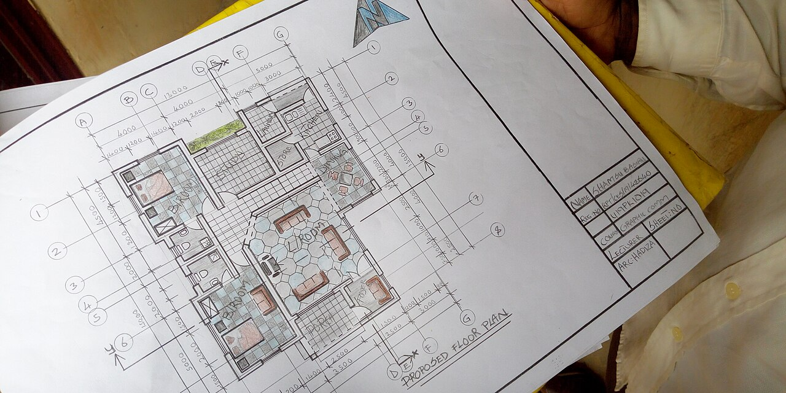

시가와 신고기한은 어떻게 정하나요?
숫자를 넣으면 상속세 및 증여세법의 기본 규칙으로 바로 계산합니다.
-
감정평가는 몇 곳에서 받나요?
-
시가는 얼마로 보나요?
-
신고기한은 언제인가요?
기한의 마지막 날이 공휴일, 토요일, 일요일이면 그다음 날이 기한입니다. 비거주자 상속 등 예외는 반영하지 않았으니 실제 신고 전에는 상담으로 확인하세요.
어떤 일을 맡길 수 있나요?
한 가지만 맡기셔도 됩니다. 줄을 누르면 그 분야로 상담 신청서가 채워집니다.
상속·증여 재산 평가와 신고
꼬마빌딩과 토지의 시가 감정부터 상속세, 증여세 신고와 세무조사 대응까지 맡습니다.
감정평가와 세무이 분야로 상담 신청양도소득세 신고
취득가액을 알 수 없을 때 취득 당시 감정가액을 매기고, 가산세 대상인지 먼저 따집니다.
감정평가와 세무이 분야로 상담 신청법인 자산재평가, 현물출자
사옥과 공장의 토지, 건물을 시가로 다시 평가하고 법인세와 재무제표 영향을 함께 계산합니다.
감정평가와 세무이 분야로 상담 신청토지 보상평가
공익사업에 편입된 토지와 지장물을 평가하고, 보상금에 붙는 양도소득세 감면을 따져 봅니다.
감정평가와 세무이 분야로 상담 신청담보, 경매, 소송 감정
금융기관 담보평가, 법원 경매와 소송 감정, 공매 평가를 감정평가 실무기준에 따라 수행합니다.
감정평가이 분야로 상담 신청기장, 세무조정, 조사 대응
개인사업자와 법인의 장부, 법인세와 종합소득세 신고, 세무조사와 불복 청구를 대리합니다.
세무이 분야로 상담 신청
따로 맡기면 무엇이 다른가요?
평가액이 1억 달라지면 과세가액도 1억 달라집니다.
| 항목 | 따로 맡길 때 | 진흥에 맡길 때 |
|---|---|---|
| 평가 기준일 | 감정 후 신고 단계에서 확인 | 신고기한에 맞춰 먼저 설계 |
| 평가 대상 범위 | 평가서와 신고 대상이 다를 수 있음 | 신고할 재산 목록 기준으로 평가 |
| 두 곳 감정 | 직접 두 기관에 의뢰하고 조율 | 다른 감정평가법인과 일정 조율 |
| 향후 양도세 | 상속 신고 때 놓치기 쉬움 | 신고가액이 훗날 취득가액이 됨을 함께 계산 |
| 세무조사, 소명 | 평가 근거를 다시 확보해야 함 | 평가 담당자가 직접 근거 제시 |
감정가액은 감정평가사가 실무기준에 따라 독립적으로 정합니다. 원하는 금액에 맞춰 평가하지 않습니다.
의뢰하면 어떻게 진행되나요?
첫 상담에서 평가 대상과 신고기한을 정하고, 수수료는 서면으로 안내합니다.

상담과 서류 확인
등기부등본, 가족관계증명서, 취득 당시 계약서 등 필요한 서류 목록을 드립니다.
세무사와 감정평가사서면 견적과 일정
평가 대상, 평가 기준일, 신고기한을 확정하고 수수료를 서면으로 알려 드립니다.
세무사현장 조사와 감정평가
감정평가사가 현장을 확인하고 평가서를 씁니다. 두 곳 감정이 필요하면 일정을 맞춥니다.
감정평가사신고와 사후 관리
평가서 가액으로 신고서를 내고, 세무서의 소명 요청과 조사에 대응합니다.
세무사
어느 곳과 일해 왔나요?
예시 페이지입니다. 표시한 로고는 실제 거래 관계를 뜻하지 않습니다.
상담 전에 무엇을 많이 묻나요?
여기 없는 내용은 상담 신청서에 남겨 주세요.
상속세 신고 때 감정평가를 꼭 받아야 하나요?
의무는 아닙니다. 다만 꼬마빌딩처럼 기준시가와 시가 차이가 큰 부동산은 국세청이 신고 후 직접 감정평가를 해 과세할 수 있어, 미리 받아 두는 편이 안전합니다.
감정평가는 몇 곳에서 받아야 하나요?
기준시가 10억 원 이하 부동산은 한 곳, 그보다 크면 두 곳의 감정가액 평균을 시가로 봅니다. 두 번째 감정은 다른 감정평가법인과 일정을 맞춥니다.
상속세와 증여세 신고기한은 언제인가요?
상속세는 상속개시일이 속한 달의 말일부터 6개월, 증여세는 증여일이 속한 달의 말일부터 3개월 이내입니다. 기한 안에 신고하면 세액의 3%를 공제받습니다.
원하는 금액으로 평가해 줄 수 있나요?
아니요. 감정가액은 감정평가 실무기준에 따라 감정평가사가 독립적으로 정합니다. 함께 정할 수 있는 것은 평가 기준일과 평가 대상의 범위입니다.
수수료는 어떻게 정해지나요?
감정평가 수수료는 국토교통부가 고시하는 보수 기준에 따라 평가액 구간별로 정해집니다. 세무 수수료는 재산 규모와 신고 범위를 보고 서면으로 견적을 드립니다.
누가 평가하고, 누가 신고하나요?
대표가 세무사와 감정평가사 자격을 모두 가진 법인입니다. 감정평가서는 감정평가사가, 신고서는 세무사가 업무마다 직접 서명하고 책임집니다.
상담은 어떻게 신청하나요?
- 사무소
- 서울 강남구 역삼동
- 상담 시간
- 평일 09:00부터 18:00까지, 주말과 공휴일 휴무
- 답변
- 영업일 기준 하루 안에 담당 세무사 또는 감정평가사가 연락드립니다.
- 준비하면 좋은 서류
- 등기부등본, 가족관계증명서, 취득 당시 매매계약서